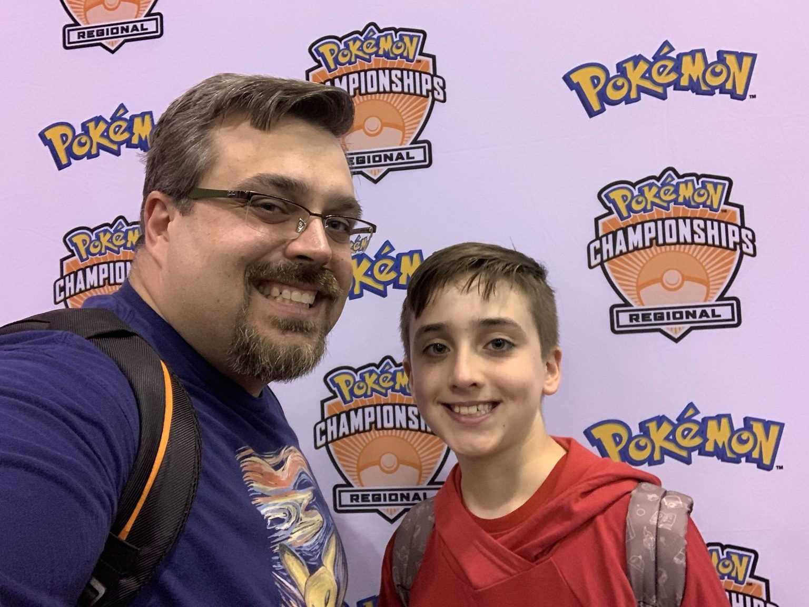
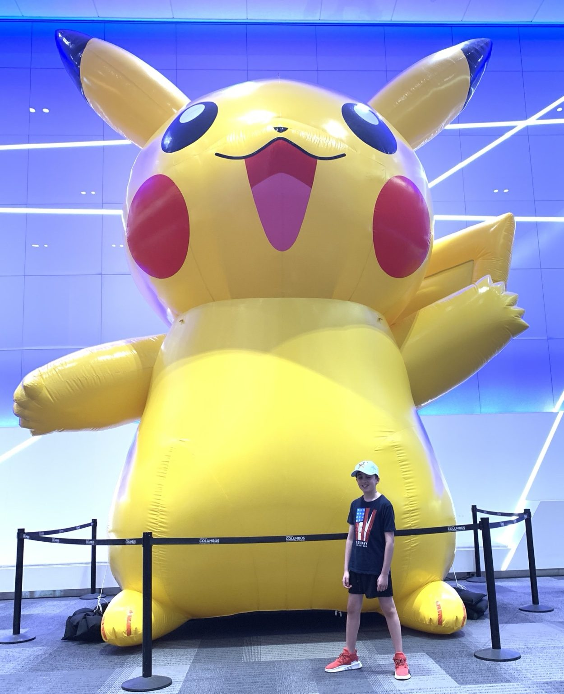
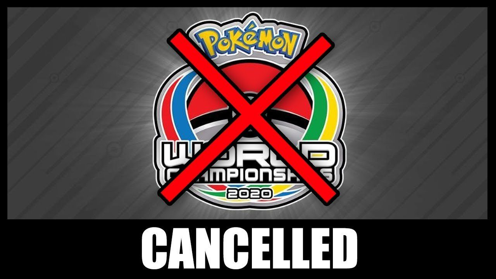
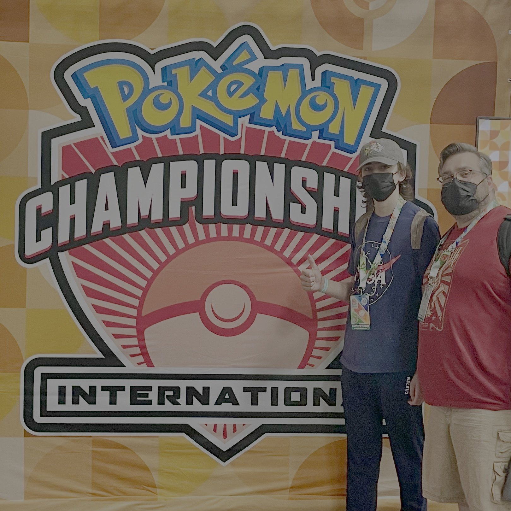
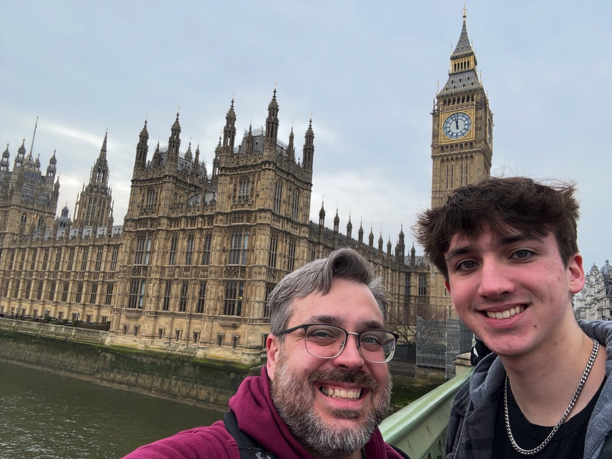
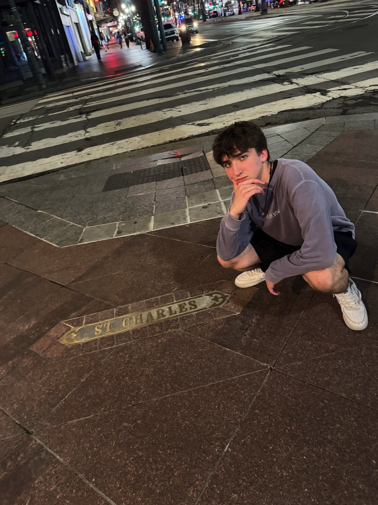
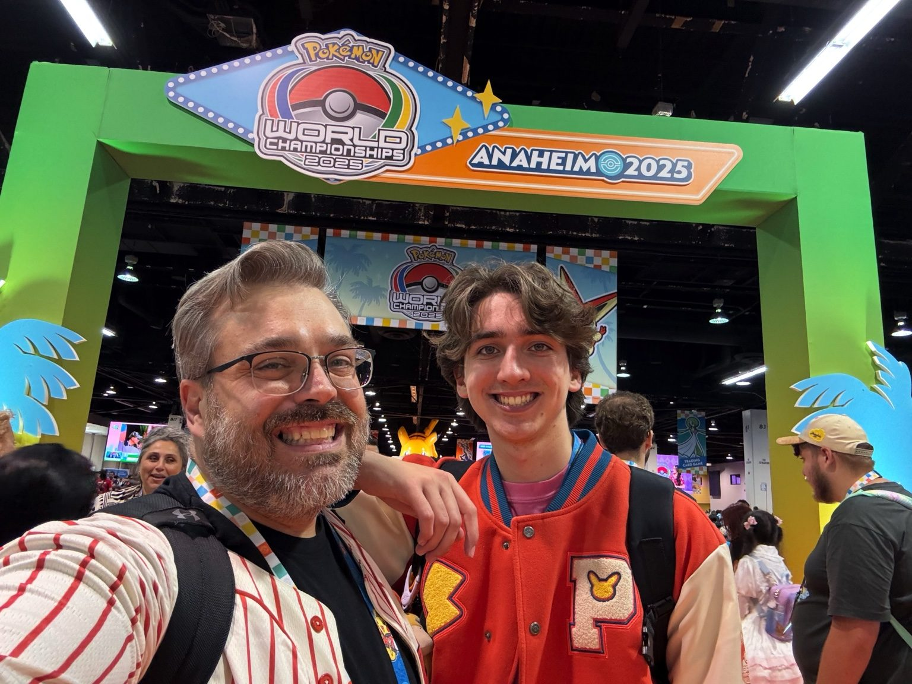

2019 NAIC
Columbus, OH - age 9. One of my first major international-level events.
Competitive systems
Pokémon started as a game I loved. Over time, it became the first place I learned how probability, preparation, adaptation, and decision-making work inside a competitive system.

Peak achievement
At age 15, I competed in Anaheim, California in the Senior Division. The result matters, but the bigger lesson was the preparation: testing, adapting, analyzing matchups, losing, revising, and staying focused in a high-pressure environment.
Timeline

Columbus, OH - age 9. One of my first major international-level events.

Atlantic City, NJ - age 10. Placed Top 64.

Qualified for London Worlds in the Juniors Division; event cancelled due to COVID-19.

Returned to high-level competition after pandemic disruption.

London, England - Top 128.

New Orleans, LA - Top 32, 24th overall, $750 prize.

Anaheim, CA - Top 100 globally in Senior Division.
Lessons learned
Every match involves odds, draws, risk, and decisions with incomplete information.
As players solve one strategy, counters emerge and the metagame changes.
Testing, matchup study, repetition, and learning from losses matter more than knowing the rules.
Losing teaches you to adjust without pretending every match went perfectly.
Small card changes can reshape the entire competitive environment.
Strategy develops through conversation, testing, travel, and shared experience.